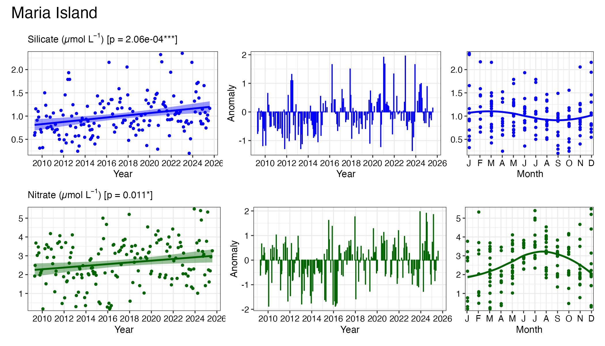

1. Essential Ocean Variables
Source:vignettes/EssentialOceanVariables.Rmd
EssentialOceanVariables.RmdBiomass and diversity are the Essential Ocean Variables (EOVs) for plankton. These are the important variables that scientists have identified to monitor our oceans. They are chosen based on impact of the measurement and the feasiblity to take consistent measurements. They are commonly measured by observing systems and frequently used in policy making and input into reporting such as State of Environment.
National Reference Stations
First we get the NRS EOV data and subset it for Maria Island and add the trend coefficients using:
EOV <- planktonr::pr_get_EOVs("NRS")
EOV_MAI <- EOV %>%
filter(StationCode == "MAI") %>%
pr_remove_outliers(2) %>%
pr_get_Coeffs()To see what EOVs are available for plotting at Maria Island, do:
unique(EOV_MAI$Parameters)
#> [1] "Biomass_mgm3" "PhytoBiomassCarbon_pgL"
#> [3] "ShannonCopepodDiversity" "ShannonPhytoDiversity"
#> [5] "Salinity" "PigmentChla_mgm3"
#> [7] "Ammonium_umolL" "Nitrate_umolL"
#> [9] "Silicate_umolL" "Phosphate_umolL"
#> [11] "CTDTemperature_degC" "Oxygen_umolL"
#> [13] "Nitrite_umolL"Once we have chosen the EOV we are interested in, we can plot it as
below. Note the use of the & to apply the theme. This
is because the resulting figure is a patchwork of ggplots.
(p1 <- pr_plot_EOVs(EOV_MAI, EOV = "Silicate_umolL") &
theme_bw()) 
We can also add other EOVs to the patchwork.
p1 / pr_plot_EOVs(EOV_MAI, EOV = "Nitrate_umolL", col = "darkgreen") &
theme_bw() &
plot_annotation(title = "Maria Island")
Continuous Plankton Recorder
We can also do the same for bioregions using data from the Continuous Plankton Recorder. In this instance, the data is structured as bioregions.
EOV <- planktonr::pr_get_EOVs("CPR")To see the bioregions and EOVs available we can look at the data
unique(EOV$BioRegion)
#> [1] South-east None South-west
#> [4] Southern Ocean Region Temperate East Coral Sea
#> 8 Levels: North North-west Coral Sea Temperate East South-east ... None
unique(EOV$Parameters)
#> [1] "BiomassIndex_mgm3" "PhytoBiomassCarbon_pgm3"
#> [3] "ShannonCopepodDiversity" "ShannonPhytoDiversity"
#> [5] "SST" "chl_oc3"Filter the data for the required bioregion.
EOV_SE <- EOV %>%
filter(BioRegion == "South-east") %>%
pr_remove_outliers(2) %>%
pr_get_Coeffs()Now plot the data
pr_plot_EOVs(EOV_SE, EOV = "ShannonPhytoDiversity", col = "darkorange") /
pr_plot_EOVs(EOV_SE, EOV = "ShannonCopepodDiversity", col = "darkred") &
theme_bw() &
plot_annotation(title = "South-east Bioregion")Long term monitoring
Sampling at Maria Island, Port Hacking and Rottnest Island begun prior to IMOS. Here we plot the data for the long-term monitoring stations only.
EOV <- planktonr::pr_get_EOVs("LTM")
EOV_PHB <- EOV %>%
filter(StationCode == "PHB") %>%
pr_remove_outliers(2) %>%
pr_get_Coeffs()To see what EOVs are available for plotting at Port Hacking LTM, do:
unique(EOV_PHB$Parameters)
#> [1] "Nitrate_umolL" "Temperature_degC" "Salinity"
#> [4] "Oxygen_umolL" "Phosphate_umolL" "Silicate_umolL"
#> [7] "DIC_umolkg" "Alkalinity_umolkg" "Ammonium_umolL"
#> [10] "DIN_umolL" "NOx_umolL" "Redfield"
#> [13] "Nitrite_umolL"Do the plotting
pr_plot_EOVs(EOV_PHB, EOV = "Temperature_degC", col = "purple") /
pr_plot_EOVs(EOV_PHB, EOV = "Salinity", col = "pink") &
theme_bw() &
plot_annotation(title = "Port Hacking")